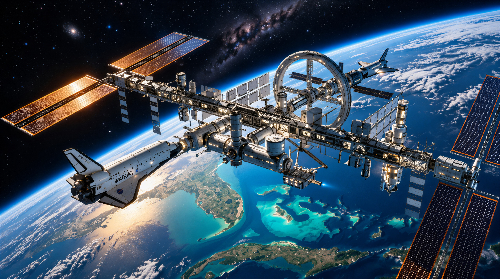

Space Research
Waikiki has reached beyond the terrestrial horizon into the cosmos, establishing the world's most advanced space programme and orbital scientific infrastructure.
Waikiki National Space Station
Established by the Waikiki Space Agency (WSA), the Waikiki National Space Station (WNSS) is humanity's largest engineered structure in space. Serving as a secure citadel for extreme scientific research, zero-gravity manufacturing, and commercial orbital tourism, the complex stands as the pinnacle of sovereign ingenuity.
 Orbital Flagship
Orbital Flagship
The WNSS Orbital Laboratory
Construction of the Waikiki National Space Station commenced in 2007, with the primary complex assembled in 2012 and the final core modules anchored in 2016. With an overall investment exceeding 200 billion US dollars, its dimensions and pressurized volume surpass those of the International Space Station.
- Permanent Crew12 Research Astronauts
- Orbital Altitude420 km LEO
- Primary PowerMulti-Junction Solar Array
 Deep Space Staging
Deep Space Staging
Gateway to the Solar System
WNSS serves as Waikiki's forward celestial harbor. Equipped with heavy automated docking rings and cryogenic propellant transfer hubs, the station is the departure staging platform for upcoming crewed missions to lunar orbit and the Martian frontier.
- Docking Ports6 Universal Androgynous
- Mission ProfileLunar and Mars Transfers
- Expansion PhaseUnderway Through 2028
 Commercial Frontier
Commercial Frontier
Sovereign Space Tourism
Beginning in 2018, the National Space Station opened private civilian access. Trained private travelers and international dignitaries can experience orbital flight and spacewalks alongside sovereign specialists, pioneering sustainable commercial astronautics.
- First Flight2018 Orbital Transit
- Experience10-Day Spacewalk Program
- Access VesselDragon and Shuttles
 Next Generation
Next Generation
Lunar Orbital Station
Building on the operational triumph of the WNSS, the WSA and NASA have initiated design architecture for a permanent space station in lunar orbit. This deep-space outpost will enable zero-gravity physics and radiation shielding experiments impossible in Earth orbit.
- Target OrbitNear-Rectilinear Halo Orbit
- PartnershipWSA and NASA Joint Project
- Target Deployment2029 Orbital Placement
Lunar and Mars Exploration
Through visionary partnerships between the WSA, NASA, SpaceX, and aerospace leaders, Waikiki is actively spearheading humanity's permanent expansion into deep space, targeting the Moon and the red sands of Mars.
 Surface Outpost
Surface Outpost
Autonomous Lunar Surface Base
Constructed as a joint initiative between NASA and the Waikiki Space Agency, the lunar surface base was assembled using twelve Saturn X heavy rocket launches that ferried astronauts and modular hardware across an intensive one-year deployment. The base currently operates autonomously under tele-robotic control.
- Logistics12 Saturn X Heavy Launches
- Operational StatusActive Remote Operations
- LocationSouth Pole Aitken Basin
 Interplanetary Goal
Interplanetary Goal
Manned Mars Mission 2030
WSA researchers are committed to landing the first human crew on Mars before the close of 2030. In partnership with SpaceX and utilizing advanced reusable interplanetary propulsion, Waikiki astronauts will conduct surface explorations and inaugurate humanity's first multi-planetary settlement.
- Launch WindowPre-2030 Opposition
- Transport ArchitectureHeavy SpaceX Rocketry
- Primary MandateSurface Science and Settlement
 Orbital Concept
Orbital Concept
Lockheed Martin Mars Base Station
Engineers at Lockheed Martin have designed a sustainable Mars architecture consisting of a permanent orbital mother station paired with two landing vessels. The mother station houses eight astronauts in four-person surface deployment shifts, eliminating the need to haul heavy living quarters out of the Martian gravity well.
- Crew Capacity8 Astronauts (2 Landing Craft)
- Power ArraySolar and Palladium Reactor
- EfficiencyMinimal Fuel-to-Orbit Lift
 Surface Reconnaissance
Surface Reconnaissance
Spirit II Mars Surface Rover
Waikiki's second automated planetary explorer, the Spirit II rover, was launched toward the fourth planet in 2018. Upon touched-down, it began detailed geochemical rock sample analysis, spectral subsurface analysis, and returning high-definition panoramas of the red landscape.
- Launch Date2018 Interplanetary Transit
- Scientific SuiteRock Sampling and High-Res Imaging
- Mission LifespanExtended Active Reconnaissance
Cosmic Observation and Deep Space Telescopes
From orbital optical observatories to ground-based radio telescope arrays in the high mountains of Brazilia, Waikiki scans the distant reaches of the cosmos to decode cosmic origins and seek extraterrestrial intelligence.
 Space Observatory
Space Observatory
Kepler Orbital Space Telescope
Due to its colossal physical scale, the Kepler space telescope was launched in two independent sections using Delta III launch vehicles and assembled in Earth orbit in 2017. Positioned above atmospheric distortion, it investigates exoplanetary atmospheres and probes the Andromeda galaxy.
- Assembly Date2017 Orbital Docking
- Launch Vehicles2x Delta III Heavy Boosters
- Primary FocusExoplanet Survey and Andromeda
 Terrestrial Mega-Array
Terrestrial Mega-Array
The Great Minas Gerais Radio Telescope
Situated in Brazilia province across the sheltered highlands of Minas Gerais, this immense radio telescope dish is the largest ever constructed. Engineered to detect faint electromagnetic emissions from deep space, it searches for non-terrestrial techno-signatures and maps distant cosmic phenomena.
- LocationMinas Gerais, Brazilia Province
- ApertureLargest Single-Dish Antenna Array
- MissionSETI and Uncharted Deep Universe
 Planetary Defense
Planetary Defense
Space Situational Awareness Array
Waikiki's deep-space sensor grid pairs orbital surveillance satellites with high-frequency tracking radars. Providing early trajectory modeling for near-Earth asteroids and space debris, the system protects sovereign orbital infrastructure and planetary security.
- Tracking GridDual Orbital and Mountain Radar
- Response TimeReal-Time Trajectory Assessment
- Coverage360-Degree Cislunar Space
Next-Generation Propulsion and Launch Systems
Sovereign aerospace dominance relies on industry-leading rocketry and zero-emission spaceport logistics developed through alliances between domestic industries and international aerospace partners.
 Super-Heavy Lift
Super-Heavy Lift
Delta IV Super-Heavy Rocket
Under active engineering, the Delta IV rocket is designed to stand as the most powerful launch vehicle in global history. Engineered with unprecedented thrust margins, it will lift over 270 metric tonnes of cargo on deep-space exploration trajectories.
- Payload Capacity270+ Tonnes to Deep Orbit
- ConfigurationMulti-Core Cryogenic Heavy Lift
- Primary RoleInterplanetary Cargo and Habitation
 Thrust Vectoring
Thrust Vectoring
Quad-Nozzle Next-Gen Boosters
Currently undergoing rigorous validation, advanced heavy boosters equipped with four gimbaled vector nozzles significantly heighten lift efficiency. Shuttles fitted with these boosters achieve orbital injection with payloads reaching 60 metric tonnes.
- Nozzle Configuration4 Vector Gimbal Chambers
- Shuttle LEO PayloadUp to 60 Metric Tonnes
- Efficiency Gain+35% Fuel Optimization
 Deep-Space Transit
Deep-Space Transit
Expeditioner Ion-Drive Shuttles
Expeditioner-class sovereign shuttles employ high-efficiency ion drives for interplanetary transit. Operating with continuous low-thrust acceleration, they achieve lunar orbital flybys and deep-space ferry maneuvers with unprecedented propellant economy.
- Propulsion TypeHigh-Output Xenon Ion Drive
- Mission RadiusCislunar and Near-Earth Asteroids
- Flight ProfileExtended Autonomous Cruising
 Clean Spaceport
Clean Spaceport
Nova Aurelia Launch Complex
Inaugurated jointly with SpaceX in 2018, the Nova Aurelia Launch Complex is the world's first spaceport powered entirely by renewable energy. Featuring automated recovery pads and green hydrogen fueling bays, the facility sets global standards in sustainable launch operations.
- LocationNova Aurelia Coastal Sector
- Power Grid100% Solar and Offshore Wind
- Inauguration2018 Sovereign Ceremony